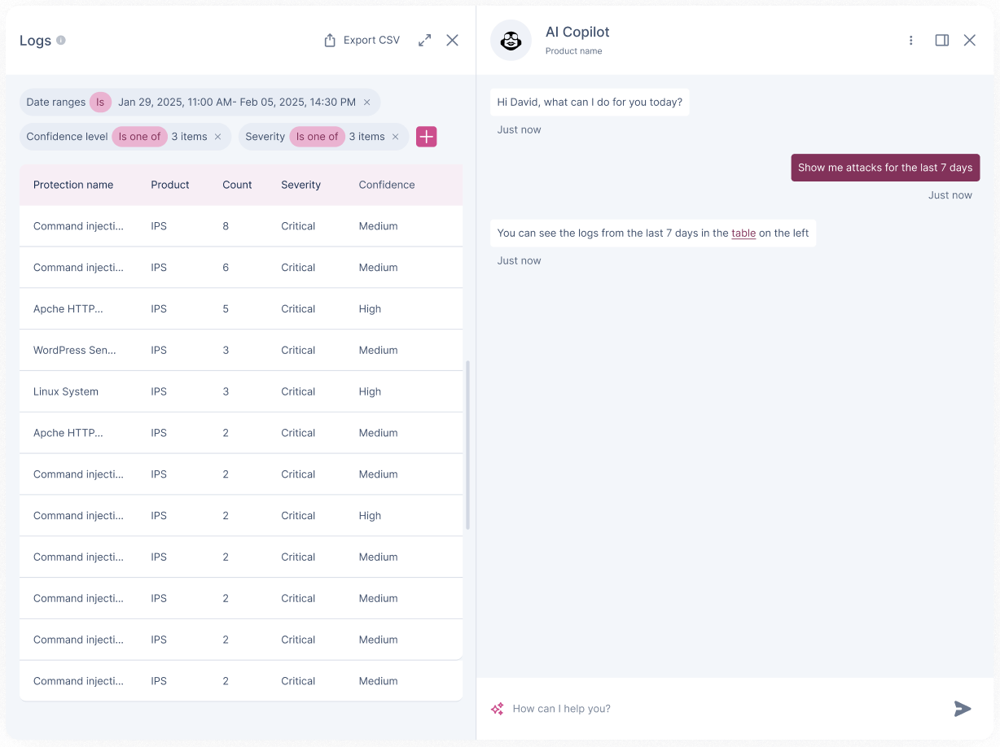
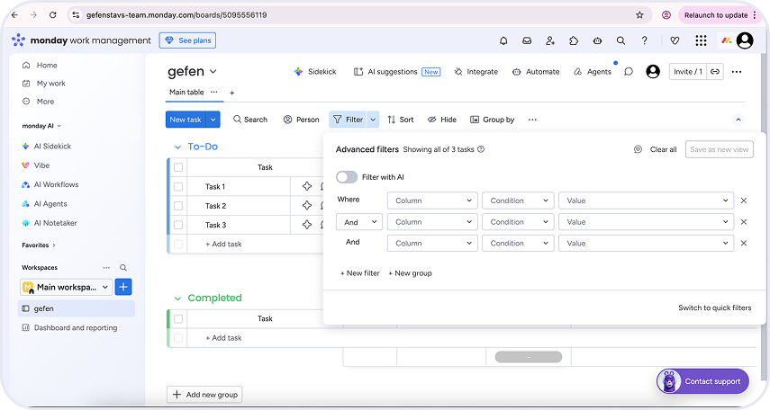
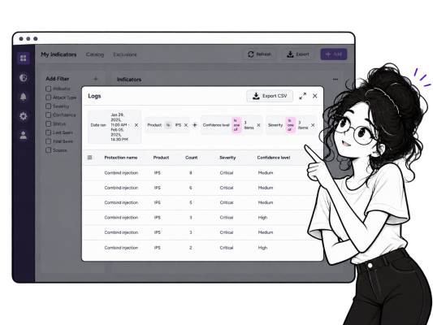
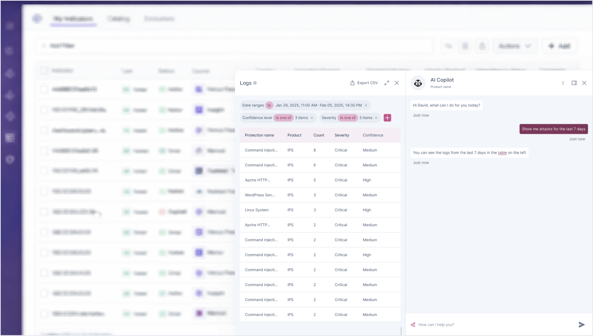
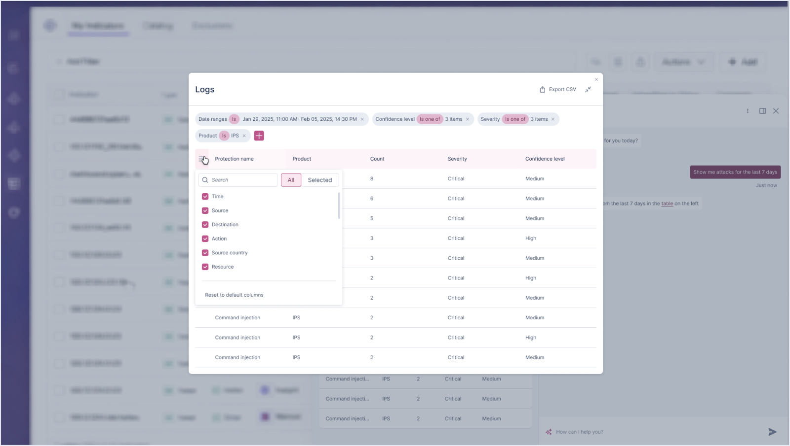

Responsabilities: UX, Research

This project focuses on improving the Copilot experience in a cybersecurity platform, specifically for searching complex log data. Logs contain large volumes of dense, technical information, making them difficult to navigate and analyze. Users often need to perform complex queries to find relevant logs, which slows down investigations and creates friction. The goal is to simplify log search through a Copilot chat interface, enabling faster, more intuitive access to relevant data.
The Problem:
Searching complex log data is challenging due to its volume and technical complexity. Within a Copilot chat interface, limited screen space makes it even harder to present relevant results clearly and maintain an intuitive, efficient search experience.
Pain Points:
The chat interface restricts how much information can be displayed at once
Users struggle to formulate precise searches to find relevant logs
Our Goals:
Enable users to search and explore complex log data through a Copilot chat interface in a way that is intuitive, efficient, and scalable while presenting relevant information clearly within limited screen space.
Alon is a senior security analyst who investigates threats and analyzes large volumes of logs. He needs a fast, intuitive way to build complex queries and surface relevant data directly within the Copilot chat interface.
Frustrations:
Limited chat interface makes it hard to view and navigate results
Difficulty creating precise queries to find relevant logs
Overwhelming amount of data, making results hard to scan and interpret
Needs:
Simple and guided way to construct complex log queries
Clear, focused results that highlight the most relevant data
Efficient way to explore and navigate logs within a constrained interface
I conducted a competitive analysis of platforms with integrations focused pages to understand how discovery and management experiences are structured and prioritized. Combined with insights from the PM, this research helped define what information users need at different stages, when exploring new integrations versus managing existing ones and highlighted patterns for creating a more intuitive, scalable, and user friendly experience.
Research Findings
Guided, filter based search
Enables users to build complex queries intuitively without needing technical knowledge.

Partial results in context
Allows quick scanning of relevant data directly within the main view.
Expandable results view
Provides full details on demand while keeping the interface clean.
Ideation & Wireframing
Based on the persona's needs, the defined problems, and insights from competitive research, I created mid to high fidelity mockups for the Copilot log search experience. The design focuses on enabling users to perform complex searches within a constrained chat interface, combining guided query building with clear result presentation. Information is structured to highlight the most relevant data, while maintaining context and readability within limited screen space. The mockups focus on simplifying query creation, improving result clarity, and enabling efficient exploration of complex logs, while reducing cognitive load and ensuring a scalable and intuitive conversational experience.
Log Search Experience
The log search experience is designed to simplify complex queries within the Copilot chat interface, enabling users to quickly find relevant log data. Instead of relying solely on manual query writing, the search supports a guided, filter-based approach that helps users build queries intuitively while maintaining flexibility. Search results are presented directly within the chat, showing a concise preview of the most relevant information to support quick scanning and evaluation. Users can expand results when needed to access full log details, allowing deeper investigation without overwhelming the interface.
Expanded Results View
To support deeper analysis, users can expand the search results into a larger, dedicated view. This expanded screen provides a more comprehensive layout, including additional columns and richer data visibility, allowing users to better explore and compare log entries.

Final Design

